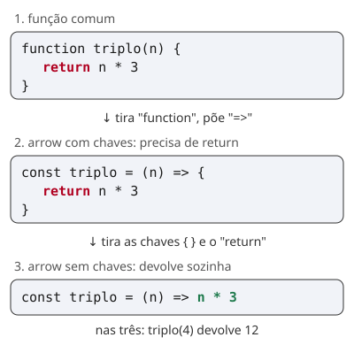

Parte de Etapa 1b: Funções. Responda no chat (1: ..., g: ...), coloque sure ou guess depois de cada resposta, e diga done no fim. Ajuda: 3 (exemplo resolvido passo a passo).
Da última vez: o que console.log(triplo(4)) mostra, com const triplo = (n) => n * 3? Você disse 12. É a c) 12.
undefined: acha que sem a palavra return nada volta. Na forma sem chaves, o valor volta sozinho.[Function: triplo]: confunde a função com a chamada. triplo(4) tem parênteses, então roda.n recebe 4, e a expressão n * 3 é devolvida.=> é uma forma válida de escrever uma função.Uma função como triplo faz um cálculo só, mas ocupa três linhas. Na lição 04, você vai passar funções pequenas como esta para outras funções. Por isso vale ter uma forma curta. A arrow function é essa forma (MDN, "Arrow functions").
Ela tem dois tipos de corpo (MDN, "Arrow functions", "Function body"):
return.return. Sem return, a função devolve undefined.A forma sem chaves só serve quando a função devolve uma expressão direto. Se o corpo tem instruções, como const ou if, as chaves são obrigatórias.

| Passo | O que aconteceu |
|---|---|
| 1 | tirar a palavra function, guardar a função numa const, e pôr => entre os parâmetros e as chaves |
| 2 | com chaves, o return continua: ele ainda é quem devolve o valor |
| 3 | o corpo era só return n * 3, uma expressão. Então dá para tirar as chaves e o return juntos |
| 4 | nas três formas, triplo(4) devolve 12 |
Mude o corpo da triplo:
Q1. Um colega diz: "a prioridadeValida não pode virar uma arrow sem chaves, porque ela tem um if". Ele está certo só em parte. Com as suas palavras: o que a forma sem chaves exige, e como a validação poderia caber nela? Não precisa escrever o código.
para funcionar sem chaves ele precisa de uma operação que retorno true ou false, igual eu fiz em licao-03
Certo na parte principal: a validação cabe sem chaves quando as condições viram uma expressão só, juntas com&&, como você fez. Só um ajuste: a expressão não precisa dartrueoufalse. Qualquer expressão serve.(n) => n * 3devolve 12 (MDN, "Arrow functions", "Function body").
Q2. Crie o arquivo licao-03.js nesta pasta, sem prompt. Nele:
prioridadeValida como arrow function com chaves;formatarTarefa, uma arrow sem chaves e sem return. Ela recebe o nome e a prioridade, e devolve um texto assim: [P2] Estudar;"Estudar". Com a prioridade "2", mostre [P2] Estudar. Com a prioridade "9", mostre Prioridade invalida.Rode e mande a saída.
pronto, pode testar o licao-03. To ficando bom nisso
O arquivo foi salvo às 11:03. A saída foi
Tarefa: EstudarePrioridade invalida. Testei os casos da questão:
Chamada Devolveu Esperado prioridadeValida("2")"Prioridade invalida"trueprioridadeValida("9")"Prioridade invalida"falseformataTarefa("P2", "Estudar")undefined(e mostra 2 linhas)"[P2] Estudar"As duas funções trocaram de trabalho. A
prioridadeValidapassou a montar texto, e aformataTarefapassou a mostrar na tela. Cada uma deve fazer uma coisa só e devolver o resultado:
prioridadeValida: recebe o texto, converte comNumber()e devolvetrueoufalse. Sem ele,"2"é recusado, como na lição 02. Oresultadode fora também pode sair.formataTarefa: devolve o texto[P2] Estudar. Oconsole.logfica fora dela.- Quem chama usa um
ifcom as duas, para os casos"2"e"9".Exemplo resolvido, em outro caso. Uma função testa, outra formata, e o
ifde fora decide:const ehPar = (texto) => Number(texto) % 2 === 0 const marcar = (n) => "<" + n + ">" if (ehPar("4")) { console.log(marcar("4")) } else { console.log("Impar") }
Passo O que aconteceu 1 ehPar("4")converte o texto e devolvetrue. Ela não mostra nada2 o ifde fora recebe otruee entra no primeiro bloco3 marcar("4")devolve"<4>". Ela também não mostra nada4 só o console.logde fora mostra:<4>. Com"7", mostraImparRefaça com essa forma e mande a saída dos dois casos (
2 again: ...).
A formataTarefa das 11:15 já está certa: ela devolve o texto. Falta só usar a prioridadeValida como pergunta do if, e não como valor para a formataTarefa. O caminho de cada caso:
"2" → prioridadeValida devolve true → o if entra → formataTarefa("2", "Estudar") devolve "[P2] Estudar" → o console.log mostra
"9" → prioridadeValida devolve false → o else mostra Prioridade invalida
pronto, pode testar o licao-03 de novo
Quase lá. O arquivo foi salvo às 11:44. Agora a forma está certa: a
formataTarefadevolve[P2] Estudar, oifde fora decide, e não tem mais variável de fora. A saída foi[P2] Estudar, mas a chamada usou o número2. A questão usa os textos"2"e"9", como vêm doprompt:
Entrada Mostrou 2(número)[P2] Estudar"2"(texto)Valor de prioridade invalido"9"(texto)Valor de prioridade invalidoFalta uma coisa só: converter o texto com
Number()dentro daprioridadeValida, antes do teste. Depois rode com"2"e com"9"e mande as duas saídas.
agora sim
O arquivo foi salvo às 11:45. O
Number()entrou na linha 3, mas o teste roda na linha 2, antes dele. A linha 9 ainda chama com o número2, então a saída[P2] Estudarnão testa o texto. Com"2", a função devolveufalse.Pergunta: na linha 2, com
prioridade = "2", quanto dáNumber.isInteger(prioridade)? E quando oNumber()precisa rodar para isso mudar?
pronto, pode testar de novo
Certo. O arquivo foi salvo às 11:47. Agora o
Number()roda na primeira linha da função, e todas as validações testam o número. Rodei os casos:"2"mostrou[P2] Estudar, e"9","abc","2.5"e""foram recusados.Na sua dúvida, você disse: "indifere se o valor informado entra como number ou texto, ja que ele vai ser validado antes". Importa, sim.
Number.isInteger("2")dáfalse, porque oNumber.isIntegernão converte o texto. Já o<e o>convertem. Por isso a conversão vem antes de todos os testes.Um detalhe, sem refazer: a função devolve o número ou
false, e a questão pediatrueoufalse. Aqui funciona, porque as prioridades 1, 2 e 3 contam como verdadeiras noif.
Agora você consegue escrever arrow functions com e sem chaves, e separar uma função que testa de uma função que formata, ligadas por um if de fora.
O que este código mostra?
function repetir(vezes, acao) {
for (let i = 1; i <= vezes; i++) {
acao(i)
}
}
repetir(3, (n) => console.log("volta " + n))
volta 1, volta 2 e volta 3acao não é uma função[Function: acao] três vezesFonte: MDN Web Docs, referência "Arrow function expressions", seções "Description" e "Function body".